For a mechanism, an animal, and even for man, to be able to use an enclosed illustration of the spatial layout of its atmosphere to position itself could be a terribly advanced task, that raises varied problems with perception, categorization associated control that has got to all be solved in an integrated manner to market survival. now is illustrated here, at intervals the framework of a review of localization methods in mobile robots. The allothetic and idiothetic sensors which will be utilized by these robots to make internal representations of their atmosphere, and also the maps during which these representations is also instantiated, are initial represented. Then map-based navigation systems are categorised in keeping with a 3-level hierarchy of localization methods, that severally decision upon direct position logical thinking, singlehypothesis following, and multiple-hypothesis following. the benefits and downsides of those methods, notably with regard to the restrictions of the sensors on that they believe, are mentioned throughout the text. It is safe to mention we might not be able to get pleasure from several of our trendy conveniences while not automation. due to advancements in robotic technology, several industrial processes are created quicker, safer and a lot of economical. Although the utilization of machine-driven instrumentation is omnipresent currently, it's vital to recollect that this was extraordinary a “lifetime” past. the primary robots were employed in trade in 1961, to unload elements during a die-casting facility. regarding twenty years later, Japanese makers took advantage of latest styles to introduce robotic production lines. Over the years, robots and AI have advanced by leaps and bounds. producing and reposition operations still notice new ways that within which they will improve and integrate their processes. and till the Nineteen Nineties industrial robots dominated artificial intelligence analysis. within the starting, the automotive trade set the specifications industrial robots had to satisfy, primarily thanks to the industry’s market clout and clear technical requirements. These requirements determined that areas of investigation were predominant throughout that amount. During the last forty five years, artificial intelligence analysis has been geared toward finding solutions to the technical requirements of applied robotics. The evolution of application fields and their sophistication have influenced analysis topics within the artificial intelligence community. This evolution has been dominated by human requirements. In the early Nineteen Sixties, the commercial revolution place industrial robots within the manufacturing plant to unharness the human operator from risky and harmful tasks. The later incorporation of business robots into different sorts of production processes side new necessities that mixed up more flexibility and intelligence in industrial robots. Currently, the creation of latest desires and markets outside the normal producing robotic market (i.e., cleaning, demining, construction, building, agriculture) and therefore the aging world we have a tendency to board is hard field and repair robots to attend to the new market and to human social desires The project is a trial to boost the performance of artificial intelligence system by providing and rising best algorithms for golem work would like.
We will focus on robot with AI are how much useful to mankind and in which way they are useful. Motivation requires for which reason we should combine these emerging technologies with each other. As per the Robin Murphy stated in his book that, “Robots are good for the 3 D’s that includes jobs that are dirty, dull, or dangerous.” In past, Military and some industries have put their efforts and resources into robotics. Now, robots are used in most of industries, space exploration, and manufacturing unit. Agriculture is the most emerging area where robots are used as a practical option instead of menial labour. The robotics market is becoming quicker than a considerable lot of us would have anticipated.
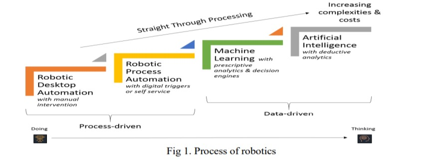It is currently anticipated to arrive at an estimation of $77 billion by 2022, more than twofold its size in 2017.AI is growing significantly quicker. It developed from $700 billion of every 2017 to $1.2 trillion out of 2018 and is required to be worth $3.2 trillion by 2022. Robotics and AI are ground-breaking markets, and the blend of these two innovations can improve lives. Deals of modern robots in India arrived at another record of 4,771 new units introduced in 2018. That is an expansion of 39 percent contrasted with the earlier year (2017: 3,412 units). India currently positions eleventh worldwide as far as yearly establishments.
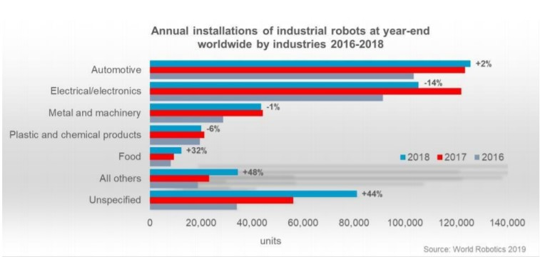According to the International Federation of Robotics, “From 2020 to 2022 practically 2 million new units of modern robots are relied upon to be introduced in assembling plants the world over. Innovation patterns and market advancements empower organizations to respond to evolving necessities. The International Federation of Robotics demonstrates top patterns to improve.” Dr. Susanne Bieller, General Secretary of the IFR says, “Smart robotics and automation are vital to deal with new consumer trends, demand for product variety or challenges from trade barriers. New technological solutions pave the way for more flexibility in production.”
Karel Capek, writer from Czech Republic wrote the play named Rossum’s Universal Robot aka R.U.R. that premiered on 25th January, 1921. As this was a science fiction play, the word “Robot” was introduced to the world for the first time. After several years, robots were introduced in factory and industry. This type of robots are only mechanical machine that are good only for already defined repetitious work. Those days, these mechanical structure or robot designs not important means they neither look like human nor even animal, only focused on their job to do. As an example, vacuum cleaner are not look like custodian. Same for helpmate robot which delivers the food to patient in hospital look like a cart not like nurse. Telemanipulators and numerical control ,these both are more empowering methods on which robotics is based. A robotics expert and scientist Issac Asimov proposed three law for the robotics that mentioned below. • “A mechanism might not injure a personality's being or, through inaction, permit a personality's being to come back to hurt.” • “A mechanism should adapt the orders given thereto by persons, except wherever such orders would conflict with the primary Law.” • “A mechanism should shield its existence as long in and of itself protection doesn't conflict with the primary or Second Laws.”[4]The figure accompanying below shows the timeline of robot development from Industrial manipulators to AI Robotics.
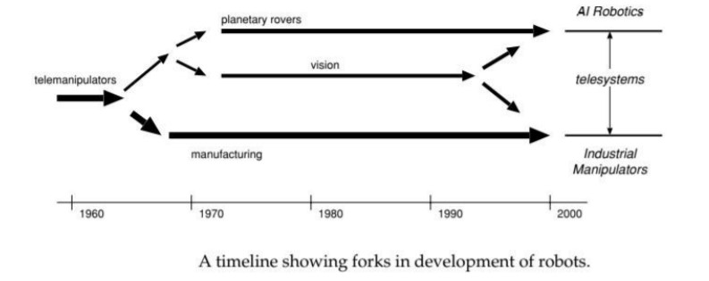There are problems which are solved using different approach but one solution is easier to solve or manipulate the problem among all. Applying proper paradigm makes solving the problem task easier. To make successful AI powered robot for particular application we need to know the paradigms. According to Robin Murphy’s book Introduction to AI Robotics, “To organize robot with intelligence there are three paradigms named hierarchical, reactive and hybrid reactive.” These three paradigms are shown by three primitives called Sense, Act and Plan. When hierarchical paradigm is used, robot sense the environment first, it plans the action and act accordingly. Below figure shown the hierarchical paradigm. In reactive paradigm just sense the environment and act on it as an example move forward up to five meter then action on motor drive and sense to reach the goal up to five meter
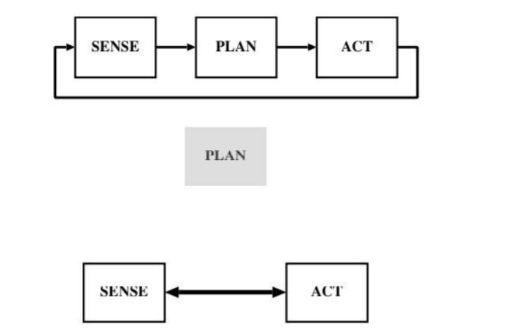Artificial Intelligence aka AI is known as the science that makes machine act intelligently like human. AI progressing from SIRI to self-driving cars.AI is used to upgrade science and technology because of its great capacity of dealing with good precision, big data and high accuracy. This technology presently used in several technologies like web-based promoting, motor driving, medication, aviation, image realization and factotum. From Google’s search algorithms to IBM’s Watson to autonomous drives and weapons can be incorporated by AI. The main objective of AI is to make a machine that intelligent to do task like human brains can do. The general AI biological system arranges these AI endeavors into two significant pails: Strong AI and Weak AI. Weak AI is intended to reproduce an identified conduct as accurately as could be normal in light of the current situation.[5] Strong AI is characterized as a learned structure provided with certifiable awareness, can think, and reason comparably as a person. SIRI powered by apple and Alexa from goggle are the most common example of the weak AI. Poker AI which can instruct itself to adjust to and outmaneuver the aptitudes of human rivals is example of Strong AI. Figure shown below is timeline of AI’s existence.
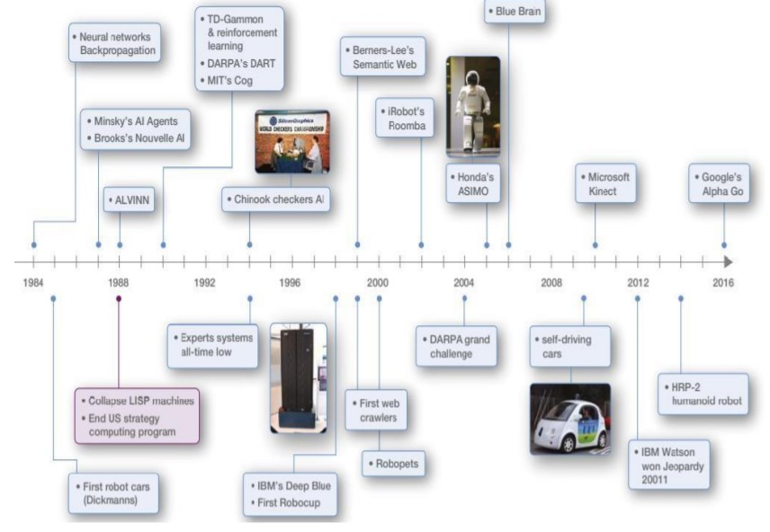The main goal for our project work is to select best algorithm for detection of object as well as sound. For object detection it will be able to detects in any situation as well as accurate detection and for sound detection it will be able to detect in noisy environment as well as accurate detection.
Basics of Neural Network:
Neural Network is most popular among machine learning. Artificial neurons are the basic part of the artificial neural network as they behave like a human brain. The essential computational component (neuron) is known as a node that gets contributions from outside sources and has some inner parameters (counting weights and biases that are gotten the hang of during training) which produce yields. This unit is called a perceptron. The essential graph of a perceptron for NNs have appeared in the accompanying outline.
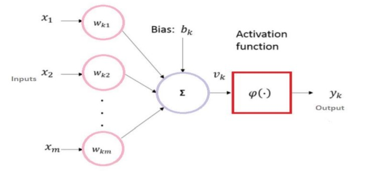As we know that Linear regression was for statisticians same as CNN (Convolutional Neural Networks), RNN (Recurrent Neural Networks), Auto Encoders, Deep Learning, etc. neural networks are slowly becoming for data scientists or machine learning practitioners.
CNN:
Fukushima has proposed the network structure of CNN for the first time in 1988.[13]CNNs have several advantages like being more similar to the human visual processing system, being highly optimized in structure for processing 2D and 3D images, and being effective at learning and extracting abstractions of 2D features. A large portion of all, CNNs are prepared with the gradient-based calculation and experience the ill effects of the lessening inclination issue. Given that the angle-based calculation prepares the entire system to limit a blunder model legitimately, CNNs can deliver exceptionally streamlined weights.
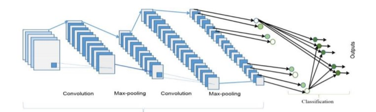The figure gives the idea about the basic architecture of the CNN. This architecture contains two part: feature extractors and a classifier. In the feature extraction layers, each layer of the network receives the output from its immediate previous layer as its input and passes its output as the input to the next layer. The CNN architecture consists of a combination of three types of layers: convolution, max-pooling, and classification.
Network Architecture Layers
Image Input Layer: An image input layer inputs 2-D images to a network and applies data normalization.
Convolutional layer: The layer convolves the input by moving the filters along the input vertically and horizontally and computing the dot product of the weights and the input, and then adding a bias term.
Batch Normalization Layer: To speed up the training of convolutional neural networks.
ReLU Layer: The rectified linear activation function is a piecewise linear function that will output the input directly if is positive, otherwise, it will output zero. It has become the default activation function for many types of neural networks because a model that uses it is easier to train and often achieves better performance.
MAX Pooling: Max pooling is a sample-based discretization process. The objective is to down-sample an input representation (image, hidden-layer output matrix, etc.), reducing its dimensionality and allowing for assumptions to be made about features contained in the sub regions binned. This is done in part to help over-fitting by providing an abstracted form of the representation. As well, it reduces the computational cost by reducing the number of parameters to learn and provides basic translation invariance to the internal representation.
A decent method to disclose move learning is to take a gander at the student teacher relationship. An instructor or teacher offers a course in the wake of social affair subtleties information in regards to that subject. The data will be passed on through a progression of talks after some time. This can be viewed as that the instructor (master) is moving data (information) to the understudies (student). Something very similar occurs in the event of profound or transfer learning, a system is prepared with a major measure of information and during the preparation, and the model learns the weights and biases. These weights can be moved to different systems for testing or retraining a comparative new model. The system can begin with pre-prepared weights as opposed to preparing without any preparation. The exchange learning approach is utilized to prepare profound learning approaches without having a lot of information.
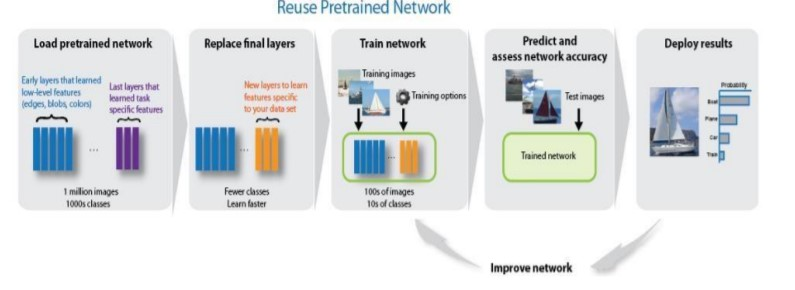As per functional block diagram says robot follow the command given by master. For this we need to make speech recognition system, object detection and avoidance with path planning. According path planning, motion controller has to give command according to feedback
As we have described before for algorithm implementation, we have used matlab and Python platform. And for we have used yolo algorithm for object detection and used CNN algorithm. Since we are not able to implement it on hardware but we have decided before lockdown to implement this task using Jetson tx1 processor provided by Nvidia. And for detection purpose we have decided to use lidar and for sound detection microphone
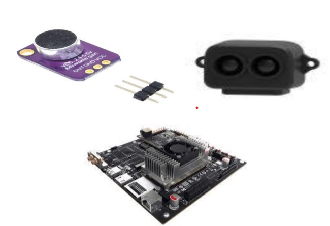Since we are not able to implement this design but for our knowledge this design might be useful.
Speech Command Recognition
This model detects the presence of the commands in audio from microphone. To train this model speech commands taken from [14]. Speech is in 1D so we convert it into 2D using spectrogram. This spectrogram is act as an image and feed into the conventional Convolution Neural Network. To convert audio file into its time localized frequency we can use simply the spectrogram () command from MATLAB. Speech has important features in specific frequencies. Below figure shown the architecture of CNN implemented in MATLAB
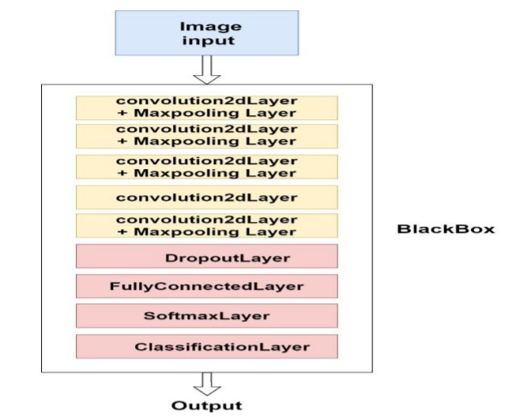As shown in figure the CNN architecture has 5 convolution layer and then dropout layer followed by FC layer with softmax and classification layer as an output. Image of spectrogram is given to the network to identify the command from the speech. Speech from microphone can be taken using the command audiorecorder(). Simulation Output:
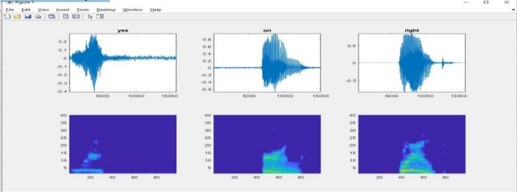Object detection
For object detection we used transfer learning feature of the Alexnet CNN. Alexnet is trained on the big image dataset called Imagenet and developed in 2012 by Alex Krizhevesky. Transfer learning is commonly used in deep learning applications. Take a pre-trained network and use it as a starting point to learn a new task. Fine-tuning a network with transfer learning is usually much faster and easier than training a network with randomly initialized weights from scratch. So we have used transfer learning of the Alexnet in this object detection technique. Input image feeds into the black box having 5 convolutional layers with 2 FC and one softmax layer. This architecture of Alexnet is shown in the figure.
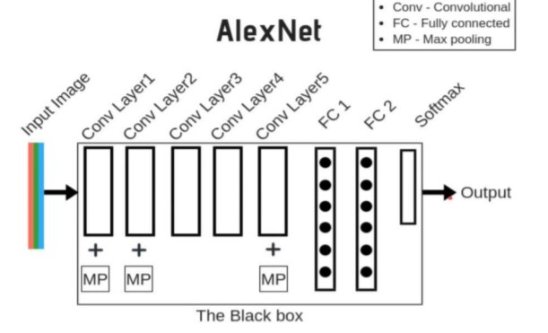Load this pre-trained network by writing below command in MATLAB editor. Net = Alexnet Output:
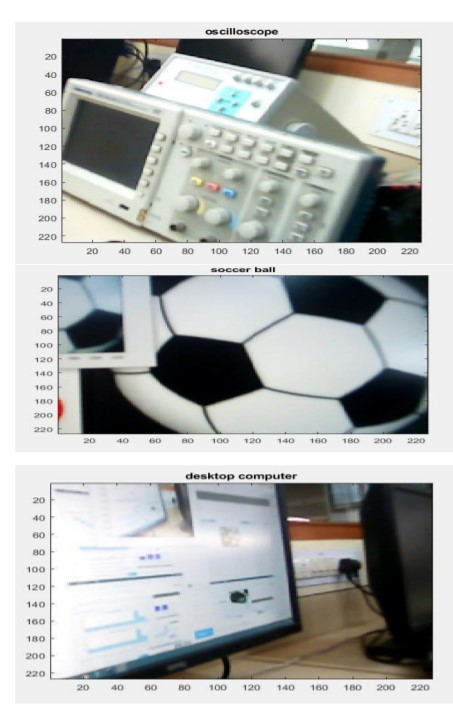